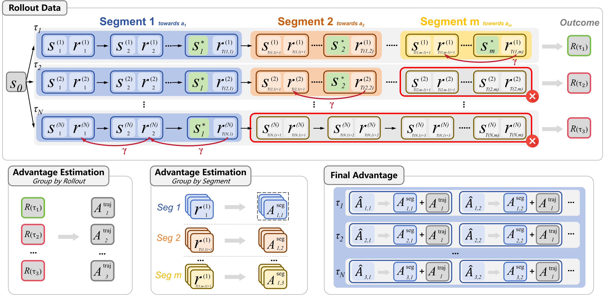
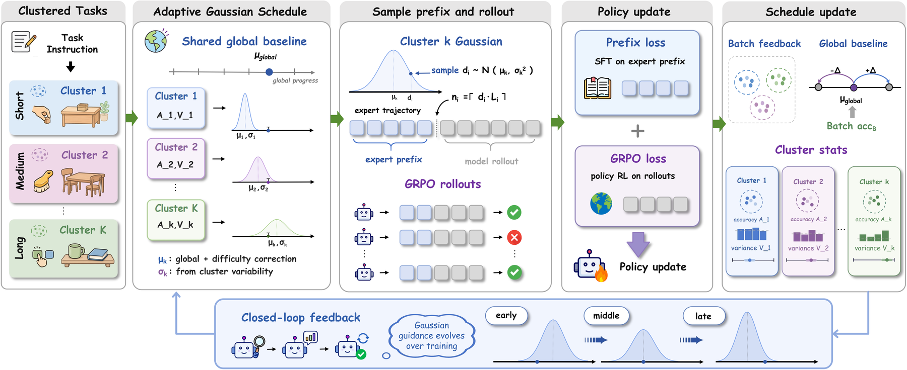
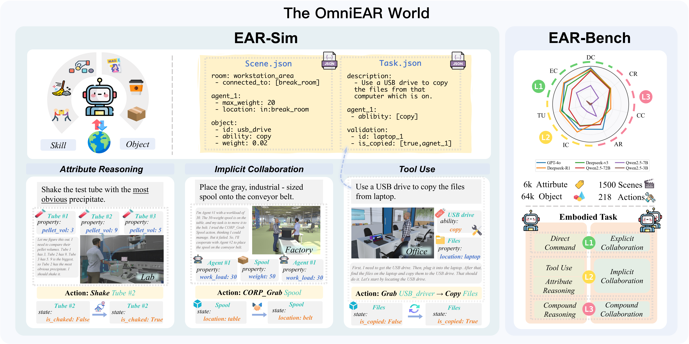

Hi! I am Zixuan Wang (王子轩), a master's student at Zhejiang University, advised by Prof. Yongliang Shen at REAL Lab. I am also a research intern in the ERNIE Foundation Model team at Baidu, supervised by Tianxiang Sun.
My research focuses on training language agents for complex, long-horizon tasks. I study how interaction feedback and expert experience can provide better learning signals, enabling agents to learn efficiently and generalize to new tasks and environments.
Feel free to reach out at wangzixuan1210@gmail.com.
🐈 Our lab is also recruiting interns — undergraduate and Master’s students are warmly welcomed! See Join.
🔥 News
📝 Selected Publications
See also my Google Scholar profile. * Equal contribution.

Milestone-Guided Policy Learning for Long-Horizon Language Agents
BEACON assigns credit to verifiable intermediate progress with milestone-based trajectory segments, temporal reward shaping, and dual-scale advantages.
92.9% success on long-horizon ALFWorld tasks; effective sample utilization improves from 23.7% to 82.0%.

Agent-G²: Gaussian Guidance for Agentic Reinforcement Learning
Adaptive Gaussian sampling of expert-trajectory prefixes turns demonstrations into effective exploration guidance, using statistics from existing training rollouts.
95.3% / 98.4% ALFWorld success with Qwen2.5-1.5B / 7B; less than one-third the rollout cost of per-sample probing.

OmniEAR: Benchmarking Agent Reasoning in Embodied Tasks
An automated pipeline synthesizes embodied scenes, tasks, expert trajectories, and task-specific success checks, combining LLM generation with rule-based validation to support agent training and evaluation.
1,500 scenarios across 11 domains, with 16,592 task instances and validated expert demonstrations.
- CoVerRL: Breaking the Consensus Trap in Label-Free Reasoning via Generator-Verifier Co-Evolution
Generator–verifier co-evolution for label-free reasoning, reducing the reinforcement of self-consistent errors.
- SpatialLadder: Progressive Training for Spatial Reasoning in Vision-Language Models
Progressive training from spatial perception to understanding and reasoning, supported by the SpatialLadder-26k dataset.
- ViewSpatial-Bench: Evaluating Multi-perspective Spatial Localization in Vision-Language Models
A benchmark and automated 3D annotation pipeline for spatial localization across multiple perspectives.
Other Publications (2)
- SpatialEvo: Self-Evolving Spatial Intelligence via Deterministic Geometric Environments
Geometry-verified self-evolution for spatial reasoning, using a deterministic environment to generate spatial questions and supervise questioner–solver training.
- Perceive-to-Reason: Decoupling Perception and Reasoning for Fine-Grained Visual Reasoning
Decouples visual evidence localization from reasoning, with alternating reinforcement learning updates for the two roles.
🎓 Background
- Zhejiang University · Master's student in Artificial Intelligence, 2025–present.
- Baidu · Research intern with the ERNIE foundation model team, Dec. 2025–present.
- Henan University · Undergraduate studies in Software Engineering, 2021–2025.
🏅 Honors & Awards
- 2023 · ICPC Provincial Contest — Gold Medal.
- 2023 · CCPC Provincial Contest — Gold Medal.
- 2022 · CCPC Provincial Contest — Gold Medal.
- Provincial Outstanding Student
- Provincial Outstanding Graduate
🤝 Service
Reviewer: ACL 2026 · EMNLP 2026 (DocInsights Workshop) · ICLR 2027.